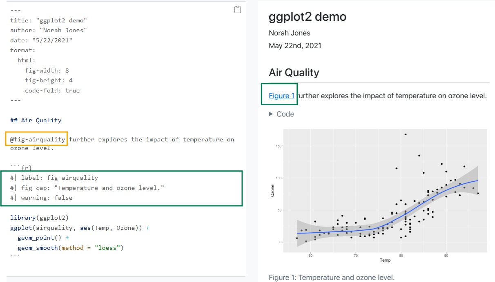

From Code to Paper: Reproducible Research with Quarto
Hello/ Hola!/ Namaste

My name is Betsabé Cohen I’m a sociologist and data analyst from Buenos Aires Argentina.
👩🏻🎓 I am currently a Masters student in Statistics at University of Tres de Febrero.
I’m currently organizer at:
RLadies Buenos Aires: A global organisation that promotes gender diversity in the R community
Núcleo de Innovación Social: An interdisciplinary research and development team in social sciences and technology.
Reproducible is distinct from replicable, robust and generalisable


“Artwork from”Hello, Quarto” keynote by Julia Lowndes and Mine Çetinkaya-Rundel, presented at RStudio Conference 2022. Illustrated by Allison Horst.”
Quarto for R and other languages

Install Quarto

Folder structure in a Quarto Project

Visual mode vs Source mode

Visual mode shortcuts


Insert Code Chuncks
 ## Code cuncks options
## Code cuncks options
